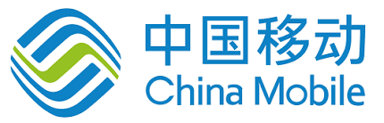
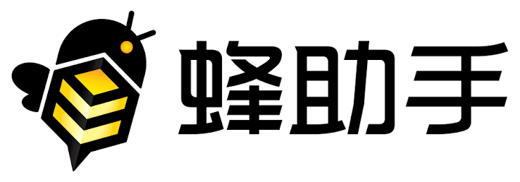

Ironlings: Heterogeneous Multi-Embodied Agent System
Embodied AILed by Prof. Lei Chen and Dr. Xujia Li, the Heterogeneous Embodied Intelligence Lab launched the Ironlings project to enable multi-agent collaboration for smart campus tasks. Key research areas include brain-level planning, cerebellum-level execution, world models, and embodied AI safety.
Industry Partners

